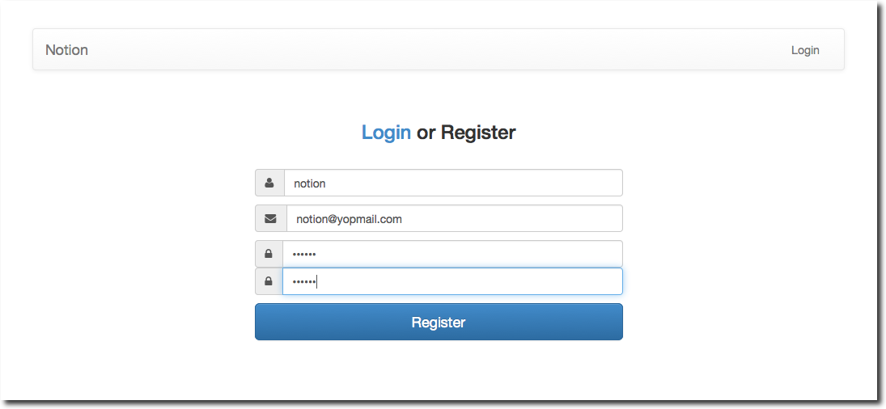
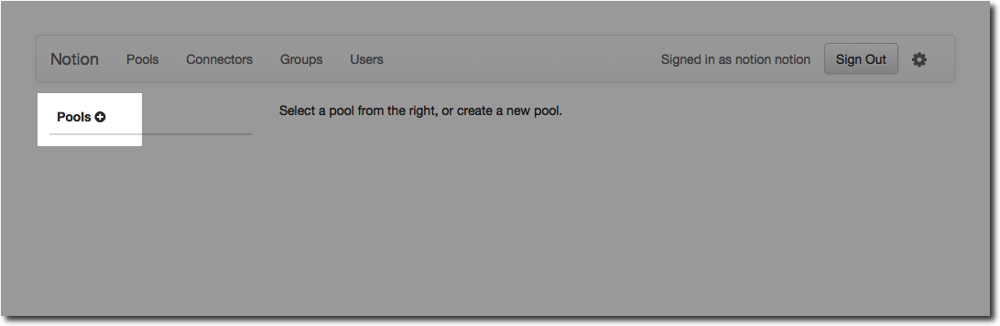
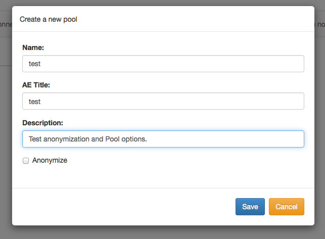
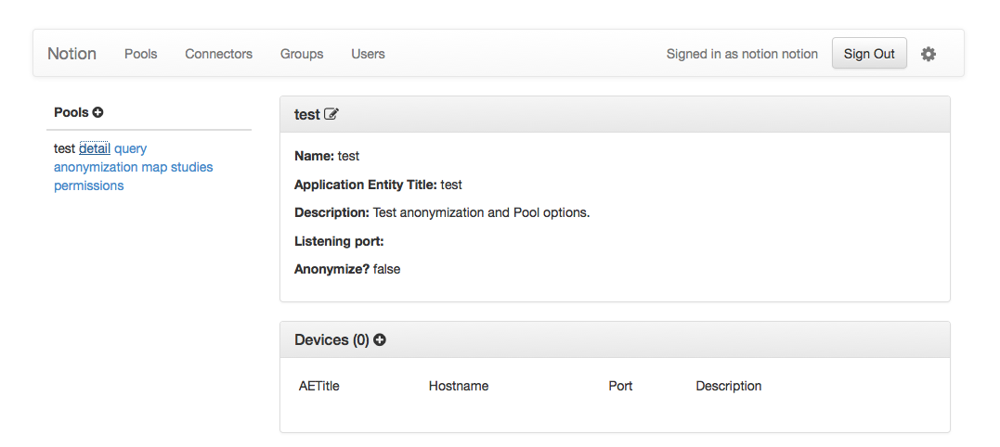

Getting Started¶
Getting started with Notion is straightforward. After installation of Notion, an instance should be up and running at http://localhost:8080. NB: links on this page reference http://localhost:8080 and can be visited if Notion is running on the local machine. Visiting the web app gives:

Create a User¶
Click the Register link on the landing page, and create a new user. For this tutorial, notion will be the username.
{kind=link}
The new user will automatically be logged in. The first user of a new Notion installation will be automatically granted administrator authorization. Users and Groups gives more detail on configuration of other users and permissions for individual pools.
Goal¶
The goal of this tutorial is to introduce several of Notion’s concepts including Pool, Device, and Anonymization. Once a simple Pool is configured, test images will be sent to the Pool, both with and without anonymization.
Create a Pool¶
On the Pool (http://localhost:8080/index.html#/pools) page of the webapp is a list of Pools defined in this Notion installation (none currently, we’ll fix that shortly). To create a Pool, click on the plus icon next to Pools.
{kind=link}
In the dialog, enter the following information:
{kind=link}
| Name: | Test pool |
|---|---|
| AETitle: | test |
| Description: | Test anonymization and Pool options. |
| Anonymizer: | do not check |
click Save to save and close the dialog.
Working with the pool¶
Clicking on the Test pool link shows details of our new test pool.
To interact with a Pool from a DICOM tool, a Device must be defined. To create a Device, click on the plus icon next to Devices to bring up the Device dialog. Enter the following information:

| Hostname: | localhost |
|---|---|
| AET: | sender |
| Port: | 11112 |
| Description: | A test sender. |
and create the new device. Access to our test pool will come through a matching Device. To allow more wide open access to the Pool, both Hostname and AET are matched as regular expressions. Using a .* will match any string, so if we enter this information for a new Device:
| Hostname: | .* |
|---|---|
| AET: | .* |
| Port: | 1 |
| Description: | Allow any host and AET to connect. |
All DICOM devices will be allowed to connect to the test Pool, including query, sending images and moving images to a third destination. For this tutorial, our wildcard Device will give us great flexibility. In practice, however, it may not be a good idea, see Device for more details on configuring Devices.
Our Device list will look like this:

Sending images to the Pool¶
There are several ways to send DICOM images to the Pool. Graphical tools such as OsiriX and ClearCanvas have excellent DICOM networking tools, but may not be available to everyone working through this tutorial. We will use the DCM4CHE tools because they happen to be bundled with Notion’s distribution.
Echo the server¶
DICOM provides a method to check if a PACS is awake and listening for connections. This is similar to a using ping to test for connectivity to a network connected server. To issue a DICOM echo (more formally a C-ECHO, see the standard for full details), we will use dcm4che’s dcmecho utility. From Notion’s install directory, invoke as:
>> java -classpath "lib/*":lib org.dcm4che2.tool.dcmecho.DcmEcho test@localhost:11117
INFO - Association(1) initiated Socket[addr=localhost/127.0.0.1,port=11117,localport=59270]
INFO - test(1): A-ASSOCIATE-RQ test << DCMECHO
INFO - test(1): A-ASSOCIATE-AC DCMECHO >> test
Connected to test@localhost:11117 in 0.034s
INFO - test(1) << 1:C-ECHO-RQ[pcid=1
cuid=1.2.840.10008.1.1/Verification SOP Class]
INFO - test(1) >> 1:C-ECHO-RSP[pcid=1, status=0H]
Perform Verification in -0.05s
INFO - test(1) << A-RELEASE-RQ
INFO - test(1) >> A-RELEASE-RP
Released connection to test@localhost:11117
INFO - test(1): close Socket[addr=localhost/127.0.0.1,port=11117,localport=59270]
We have successfully connected to Notion’s DICOM server. Let’s query our first pool:
>> java -classpath lib:"lib/*" org.dcm4che2.tool.dcmqr.DcmQR test@localhost:11117
INFO - Association(1) initiated Socket[addr=localhost/127.0.0.1,port=11117,localport=59278]
INFO - test(1): A-ASSOCIATE-RQ test << DCMQR
INFO - test(1): A-ASSOCIATE-AC DCMQR >> test
INFO - Connected to test@localhost:11117 in 0.03 s
INFO - Send Query Request using 1.2.840.10008.5.1.4.1.2.2.1/Study Root Query/Retrieve Information Model - FIND:
(0008,0020) DA #0 [] Study Date
(0008,0030) TM #0 [] Study Time
(0008,0050) SH #0 [] Accession Number
(0008,0052) CS #6 [STUDY] Query/Retrieve Level
(0020,000D) UI #0 [] Study Instance UID
(0020,0010) SH #0 [] Study ID
(0020,1206) IS #0 [] Number of Study Related Series
(0020,1208) IS #0 [] Number of Study Related Instances
INFO - test(1) << 1:C-FIND-RQ[pcid=7, prior=0
cuid=1.2.840.10008.5.1.4.1.2.2.1/Study Root Query/Retrieve Information Model - FIND
ts=1.2.840.10008.1.2.1/Explicit VR Little Endian]
INFO - test(1) >> 1:C-FIND-RSP[pcid=7, status=0H]
INFO - Received 0 matching entries in 0.055 s
INFO - test(1) << A-RELEASE-RQ
INFO - test(1) >> A-RELEASE-RP
INFO - Released connection to test@localhost:11117
INFO - test(1): close Socket[addr=localhost/127.0.0.1,port=11117,localport=59278]
The command ran sucessfully, but didn’t return anything (Received 0 matching entries in 0.055 s) because there is no data in the Pool. Let’s send some data:
>> java -classpath lib:"lib/*" org.dcm4che2.tool.dcmsnd.DcmSnd test@localhost:11117 /path/to/DICOM/Data
Scanning files to send
....................................................................................................................................................................
Scanned 164 files in 0.176s (=1ms/file)
Connected to test@localhost:11117 in 0.
<NB: INFO message removed for brevity>
....................................................................................................................................................................
Sent 164 objects (=3.0736637MB) in 3.579s (=879.4165KB/s)
Released connection to test@localhost:11117
To verify that Notion recieved images, check the Study web page for our Pool. This page can be accessed directly, or by clicking on the View Studies link under the Test pool in the Pools list.
{kind=link}
Study data stored in the Test Pool. In this case a patient named MRA-0068 was sent to the server, your particular data may be different. To delete the study, click the “x” icon, and to download click the blue download icon to the right of the study.
Now, if we try our query once again:
>> java -classpath lib:"lib/*" org.dcm4che2.tool.dcmqr.DcmQR test@localhost:11117
INFO - Association(1) initiated Socket[addr=localhost/127.0.0.1,port=11117,localport=59286]
INFO - test(1): A-ASSOCIATE-RQ test << DCMQR
INFO - test(1): A-ASSOCIATE-AC DCMQR >> test
INFO - Connected to test@localhost:11117 in 0.03 s
INFO - Send Query Request using 1.2.840.10008.5.1.4.1.2.2.1/Study Root Query/Retrieve Information Model - FIND:
(0008,0020) DA #0 [] Study Date
(0008,0030) TM #0 [] Study Time
(0008,0050) SH #0 [] Accession Number
(0008,0052) CS #6 [STUDY] Query/Retrieve Level
(0020,000D) UI #0 [] Study Instance UID
(0020,0010) SH #0 [] Study ID
(0020,1206) IS #0 [] Number of Study Related Series
(0020,1208) IS #0 [] Number of Study Related Instances
INFO - test(1) << 1:C-FIND-RQ[pcid=7, prior=0
cuid=1.2.840.10008.5.1.4.1.2.2.1/Study Root Query/Retrieve Information Model - FIND
ts=1.2.840.10008.1.2.1/Explicit VR Little Endian]
INFO - test(1) >> 1:C-FIND-RSP[pcid=7, status=ff00H
ts=1.2.840.10008.1.2.1/Explicit VR Little Endian]
INFO - test(1) >> 1:C-FIND-RSP[pcid=7, status=0H]
INFO - Query Response #1:
(0008,0050) SH #10 [8863218-1] Accession Number
(0008,0052) CS #6 [STUDY] Query/Retrieve Level
(0008,0054) AE #4 [test] Retrieve AE Title
(0020,000D) UI #52 [1.2.40.0.13.1.1.172.22.2.90.20080613130257614.49733] Study Instance UID
(0020,0010) SH #6 [23274] Study ID
(0020,1206) IS #2 [2] Number of Study Related Series
(0020,1208) IS #4 [164] Number of Study Related Instances
INFO - Received 1 matching entries in 0.043 s
INFO - test(1) << A-RELEASE-RQ
INFO - test(1) >> A-RELEASE-RP
INFO - Released connection to test@localhost:11117
INFO - test(1): close Socket[addr=localhost/127.0.0.1,port=11117,localport=59286]
And we receive one matching response containing 2 Series and 164 Instances (images in DICOM-speak). The images in the Pool may be queried or retrieved by a variety of tools, including command line tools like dcm4che.